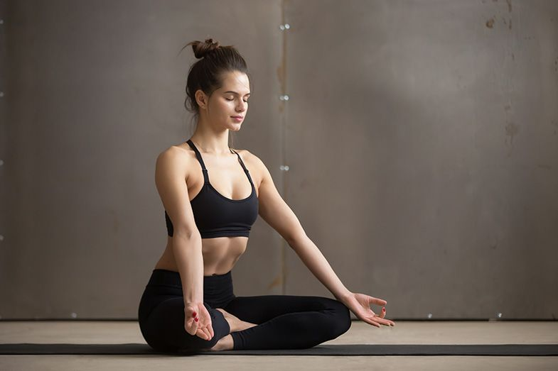
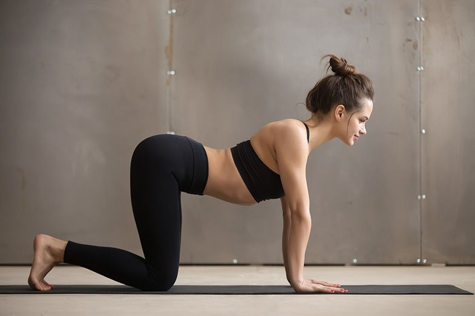
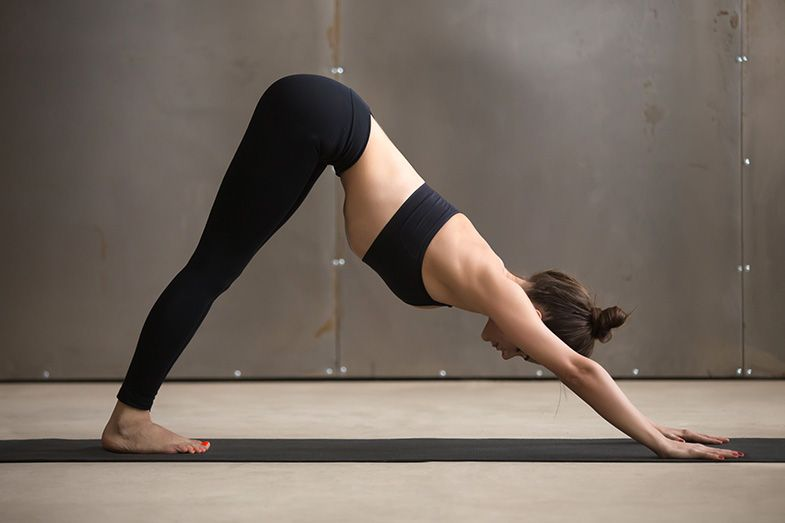
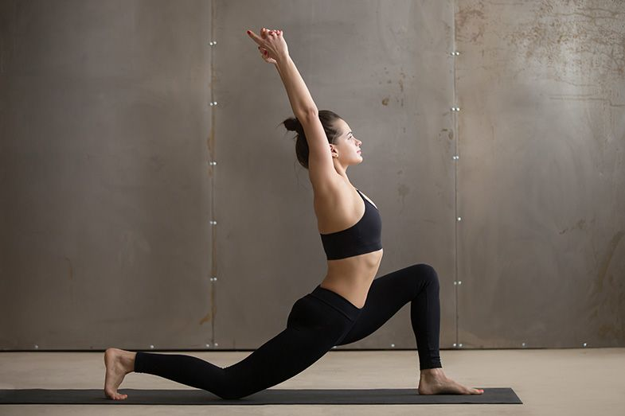
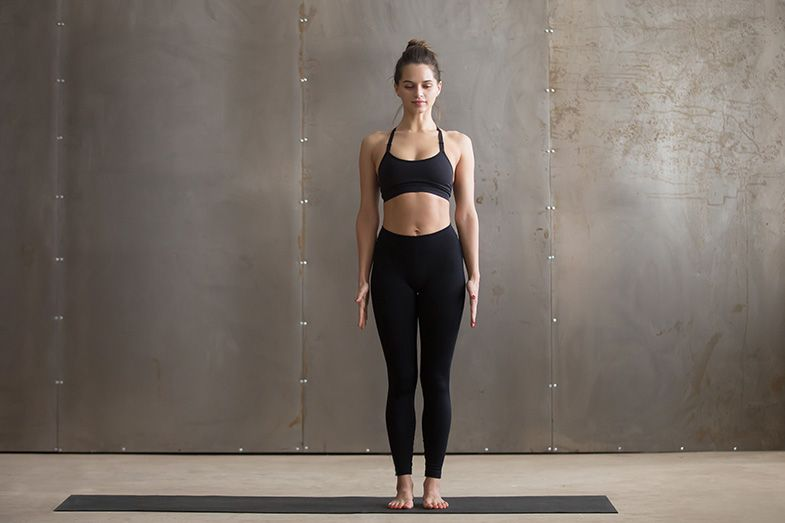
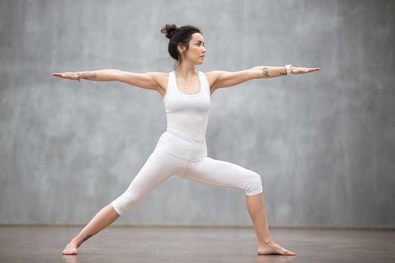
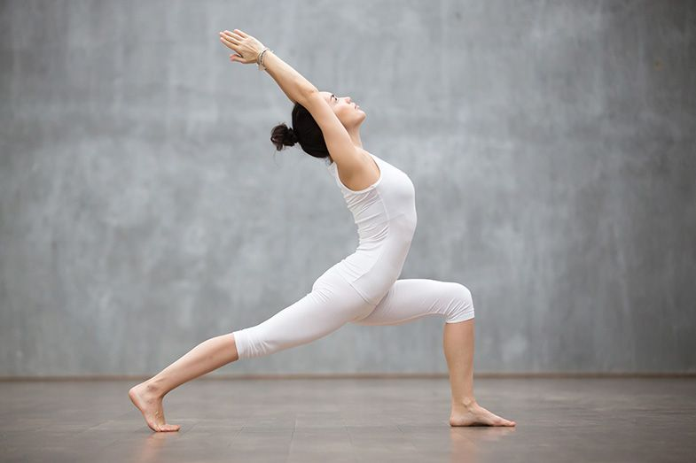
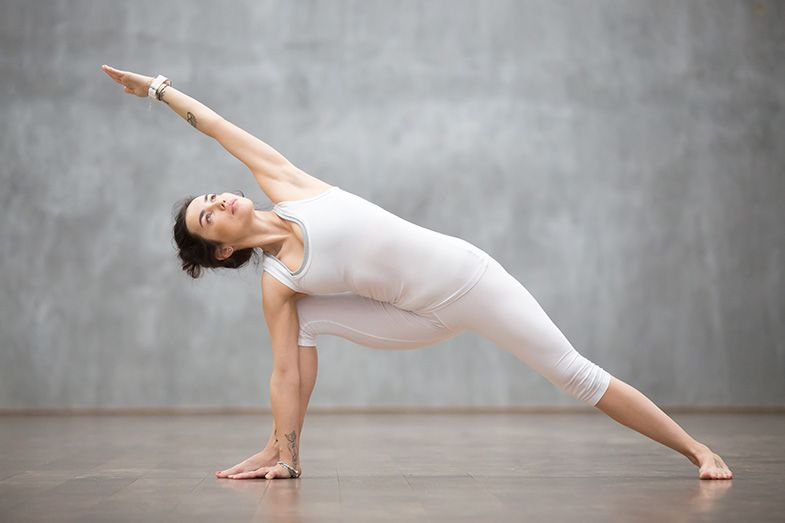
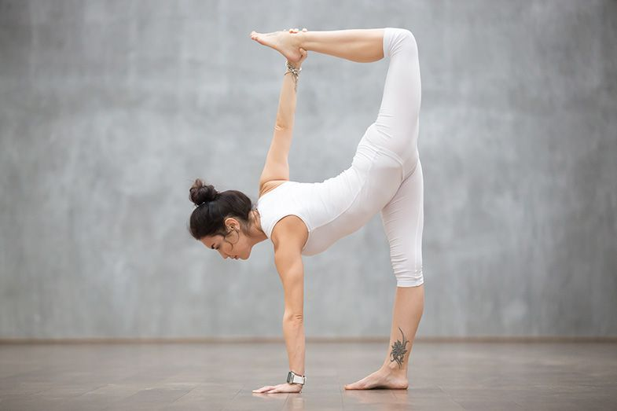

Siéntate sobre los talones –no a todo el mundo le resulta cómoda esta postura,
así que puedes sentarte con las piernas cruzadas si es mejor para ti–.
La consigna es conseguir estar cómoda en cada una de las posturas.
Visualiza una emoción positiva, que te haga sentir muy bien o algo que te guste
muchísimo y obsérvalo en tu mente con todo detalle. La idea del ejercicio es sentir
cómo la emoción activa todo el cuerpo.
Mantén los brazos relajados, enraiza las piernas en la tierra y desde el centro del abdomen
empieza a moverte.
La columna vertebral tiene que ir fluyendo como si se tratara de una ola.
Inhala y abre el pecho en dirección al cielo. Exhala y baja hacia la tierra como si hicieras
una plegaria.
2. Balasana
Colócate en la postura del niño para alargar los brazos hacia delante, estirar el tronco y
soltar tensiones.
3. Gato-vaca


Ponte en cuadrupedia –a cuatro patas– en el suelo. Ten en cuenta, sobre todo, enraizar bien las manos
en la tierra. Inhala y deja que la respiración te guíe hacia el movimiento. Eleva la espalda,
arqueándola y agacha la cabeza a la vez que encoges el abdomen hacia adentro.
Realiza la postura de la vaca, complementaria a la anterior, que consiste en elevar la pelvis
y la cabeza hacia arriba y abrir el pecho.
Combina los movimientos realizando movimientos en círculo con las caderas, los hombros y la espalda.
Tienes que sentir apertura en el tórax y que vas creando espacio.
4. En cuadrupedia, con estiramiento de piernas
Después de inhalar, empieza a estirar la pierna derecha alargándola lo máximo posible.
Exhala llevando la rodilla hacia el pecho y arqueando la espalda hacia el techo.
Si te focalizas en tu respiración, verás como el movimiento se vuelve más fluido y no forzarás
la postura.
5. Flexibilizar caderas
En cuadrupedia, con las piernas a la anchura de las caderas, realiza movimientos circulares
primero con la pierna derecha flexionada y luego con la pierna izquierda, de modo que vayas
notando apertura en tus caderas.
6. Perro mirando abajo con balanceo

Con flexión de pies, empuja la pelvis hacia arriba con las rodillas flexionadas
hasta tener las piernas completamente estiradas. Balancea la cadera de un lado a otro,
flexionando y estirando las rodillas. Estos movimientos facilitarán encontrar comodidad en la
posición del perro mirando abajo.
7. Luna creciente

Desde la postura del perro mirando abajo, lleva el pie derecho a la colchoneta.
Relaja los hombros y los glúteos. Inhala y abre el pecho. Eleva los brazos por encima
de la cabeza y lleva las manos hacia el cielo o bien ayúdate con las manos en el sacro
(esto te permitirá hacer menos esfuerzo en la postura para mantener el equilibrio y estirar
la espalda).
8. Tadasana o postura de la montaña en movimiento

Colócate de pie con los pies juntos. Busca la estabilidad de tus piernas.
Inhala y lleva la rodilla derecha hacia el pecho enraizando la pierna izquierda a la tierra.
Ve cambiando de una pierna a la otra. Puedes ayudarte moviendo las manos. Busca un efecto de
'soltar' cada vez que tus piernas y brazos desciendan hacia el suelo.
9. Guerrero 2 y 10. Guerrero invertido


Desde el perro que mira abajo, lleva el pie derecho a la colchoneta y construye el guerrero 2.
Ve fluyendo en una y otra postura estirando todo el cuerpo y manteniendo la respiración.
11. Ángulo lateral extendido

Desde el guerrero, coloca la mano derecha en el suelo y eleva la otra hacia el cielo hasta
formar una cruz. Ve fluyendo en la postura, llevando el cuerpo hacia atrás y hacia delante,
abriendo y cerrando el pecho ligeramente.
12. Arda chandrasana o postura de media luna

Esta postura, con un equilibrio lateral y apertura del tronco, requiere mucho equilibrio,
así que si no estás cómoda evita quedarte mucho tiempo en ella.
13. Rodillas al pecho
Lleva las rodillas al pecho y abrázalas. Balancéate suavemente realizando un ligero masaje en tu espalda contra
la esterilla.
14. Flexión de cadera
Estírate boca arriba, coloca los brazos en línea con los hombros y las palmas de las manos hacia arriba. Dobla
las rodillas y échalas hacia un lado manteniendo el hombro contrario pegado a la esterilla. Realiza un ligero
movimiento de cadera, como si serpentearas. Cambia de lado.